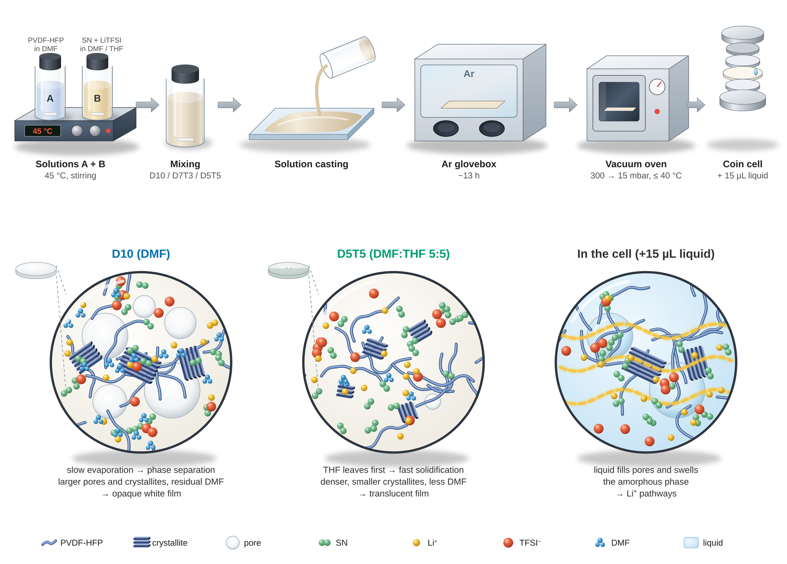
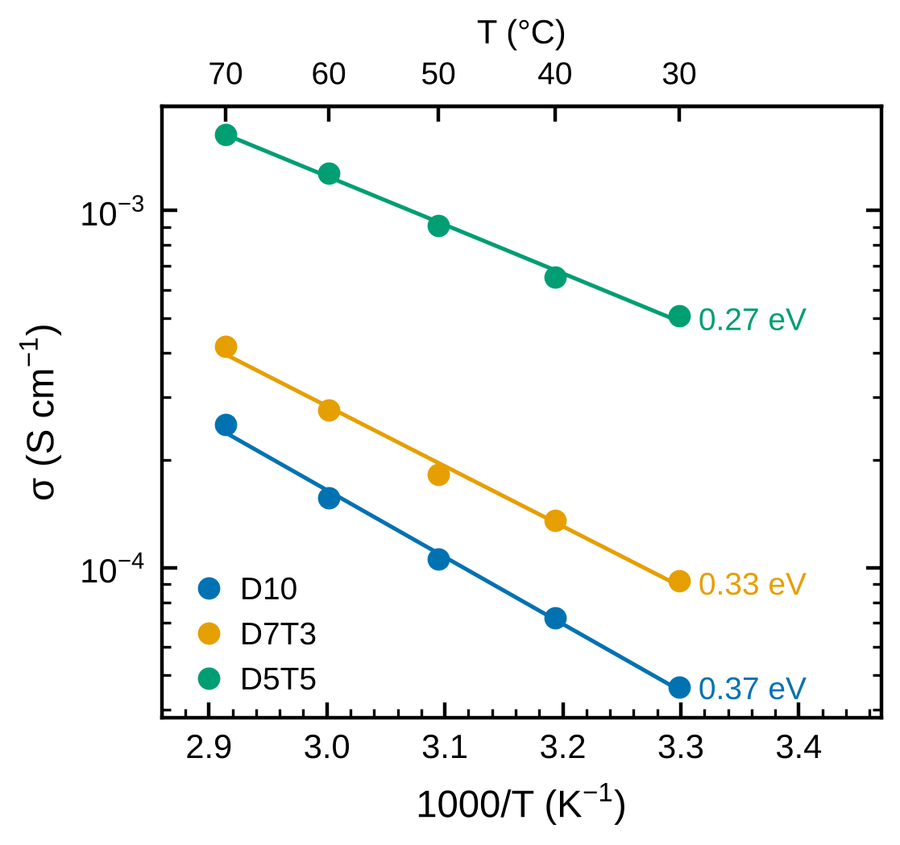
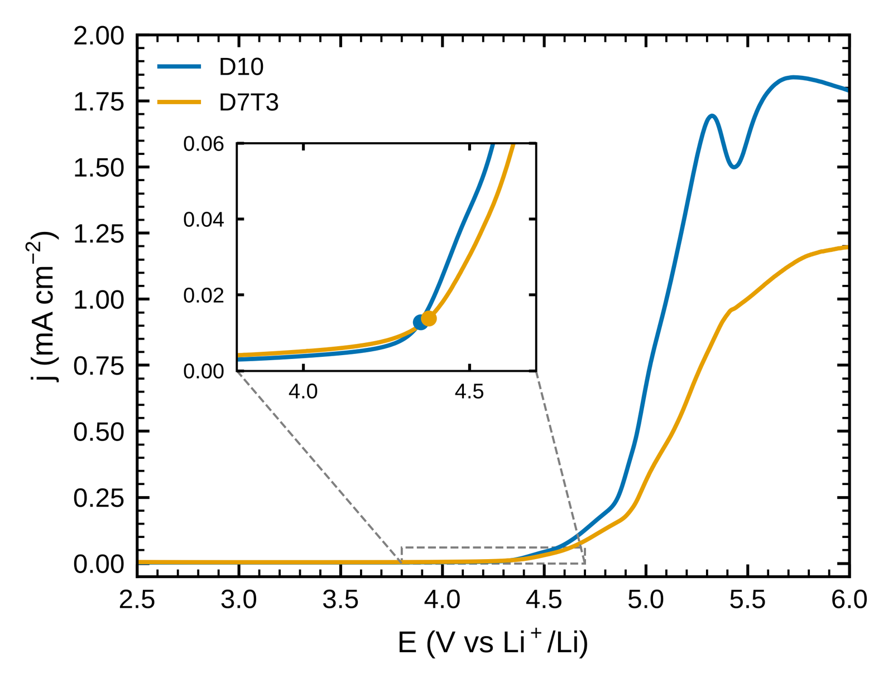
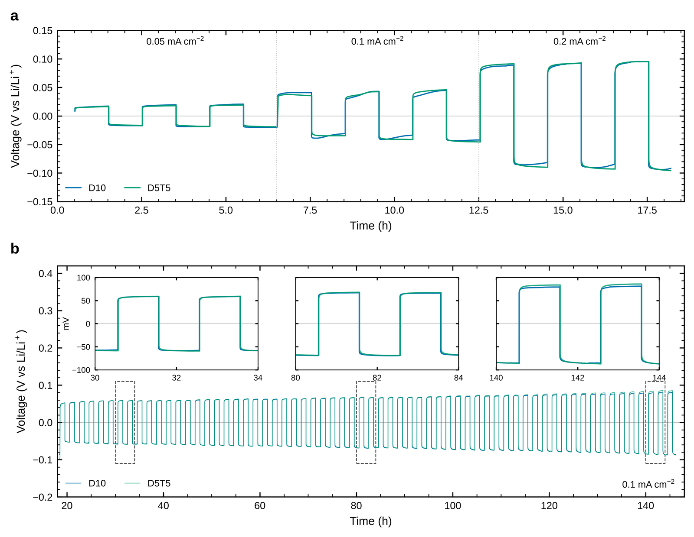
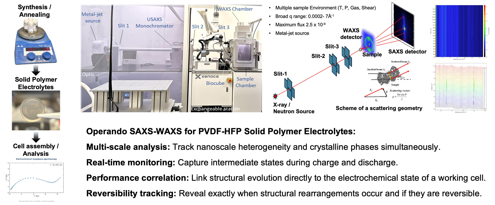

Co-Solvent Processing and Operando Structure of PVDF-HFP/Succinonitrile Polymer Electrolytes

This project studies how the casting co-solvent controls the structure and lithium-ion transport of PVDF-HFP/succinonitrile (SN)/LiTFSI quasi-solid electrolytes. Membranes are solution-cast from DMF (D10) or from DMF:THF mixtures (7:3, D7T3; 5:5, D5T5) and dried under a controlled, stepwise schedule (Ar glovebox, then stepped vacuum at ≤ 40 °C) so that the plasticizing SN stays in the film.
The co-solvent visibly changes the film: DMF-cast membranes are opaque white, whereas DMF:THF-cast membranes are translucent, pointing to differences in porosity and crystallinity. The conductivity follows Arrhenius behaviour between 30 and 70 °C, with the lowest activation energy for DMF:THF-cast D5T5 (0.27 eV). Oxidation starts at about 4.35–4.38 V vs Li+/Li, and Li|Li cells cycle with nearly identical overpotentials over 146 h. Ongoing work combines ex situ SAXS/WAXS, SEM and TGA with operando SAXS/WAXS in window coin cells to follow how the membrane nanostructure responds to lithium plating and stripping.
Key Results

Ion transport
Temperature-dependent ionic conductivity (SS|SS, 30–70 °C) with Arrhenius fits. The DMF:THF-cast D5T5 membrane shows the highest conductivity and the lowest activation energy (0.27 eV, vs 0.33 eV for D7T3 and 0.37 eV for D10).

Oxidative stability
Linear sweep voltammetry (Li|SS, 1 mV s−1). The inset marks the onset at 10 µA cm−2: 4.35 V for D10 and 4.38 V for D7T3.

Li|Li cycling
Rate test at 0.05–0.2 mA cm−2 followed by 146 h at 0.1 mA cm−2. D10 and D5T5 show nearly identical overpotentials.

Operando SAXS/WAXS (in progress)
Laboratory SAXS/WAXS (KWS-X, Ga MetalJet source) with coin cells fitted with X-ray windows, to track crystallinity, lamellar spacing and Li-deposit scattering while the cell is cycled.
Methods
Electrolyte Preparation
- PVDF-HFP / LiTFSI / Succinonitrile
- DMF and DMF:THF Co-Solvent Casting
- Stepwise Vacuum Drying
- Coin-Cell and Window-Cell Assembly
Structural & Operando Characterization
- SAXS / WAXS
- Operando SAXS/WAXS
- SEM
- TGA / DSC
Electrochemical Analysis
- Impedance Spectroscopy (σ, σ(T))
- Linear Sweep Voltammetry
- Li|Li Cycling, Transference Number